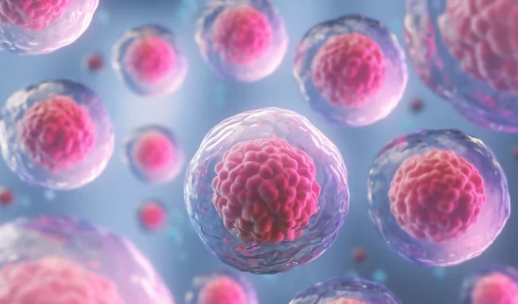

Read the information and after that answer the activity. If there is a word you don't understand, you can look it up here.
|
 Another important signaling pathway is Notch, a transmembrane protein that mediates juxtacrine cell-cell communication. Notch has many functions in organ formation and adult homeostasis, including cell determination and stem cell maintenance. Carrieri and Dale review the particularly well-studied function of Notch in somitogenesis and also present recent data on the role of FBXW7 protein in regulating the turnover of Notch intracellular domain (NICD, the effector of the pathway), in development and cancer. This relates to an often-overlooked essential point in signaling, which is the termination of activation and resetting of the components, allowing the cells to become competent again. Crosstalk between the limited numbers of signaling pathways is a mechanism that allows cells to respond differently to the same signal, producing the diverse cellular behaviors that are needed to build tissues and organs. Díez del Corral and Morales review the multiple roles of Fgf signaling in the developing spinal cord. This important structure of the nervous system arises from neural derivatives of an early euromesodermal population located at the caudal part of the embryo. Extension of this region is coupled to spinal cord formation and several essential processes such as neurogenesis, ventral patterning or neural crest specification are controlled by Fgf signaling. These embryonic functions of Fgfs could be related to its ability to promote regeneration in the injured spinal cord of adults. |